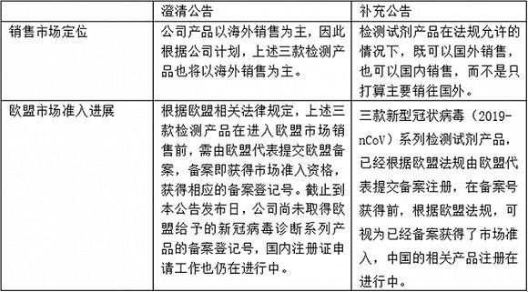

医生杜显圣确诊后去世，单位曾发生聚集性疫情
原文链接 备份链接 澎湃新闻记者 钟煜豪 据海南日报客户端2月23日消息，记者从2月23日晚召开的海南省新闻办第十七场新闻发布会上获悉：患新冠肺炎的琼中阳江农场医院医生杜显圣，于23日中午经抢救无效病逝。 消息称，救治期间，海南省委书记刘 …

图片来源：视觉中国
记者：陈慧东
“
东方生物内部工作人员向界面新闻表示，公司研发的新型冠状病毒诊断系列产品在国内市场仍未取得相关许可，初步产量无法估计。
”
作为2020年春节开市后首家登陆科创板的公司，东方生物(688298.SH)上市首日（2月5日）飙涨586.96%，刷新了科创板新股上市首日的涨幅纪录。不过，因近期对公司“新冠病毒诊断系列产品” 的公告出现信披失误，东方生物于2月23日收到了上交所发布的监管问询函。
2月23日晚间，东方生物率先披露一则澄清公告称，公司于今年二月初完成了新型冠状病毒（2019-nCoV）系列检测试剂新品的研发。澄清公告中，东方生物对上述公司产品的销售市场、备案进度等进行了披露。
然而，同日（2月23日）晚间，东方生物又披露了一条“关于澄清公告的补充公告”，补充公告称“由于工作人员的表述失误”，对上述澄清公告中的内容进行更正。

对此，上交所2月23日晚间向东方生物下发监管问询函，要求公司说明新冠病毒诊断系列产品在欧盟备案注册的具体进展；在国内销售是否需要取得有权部门的审批或许可；说明相关产品是否存在权属争议或潜在纠纷；如在国内销售，对当期经营和业绩的影响等问题。
东方生物2月23日公告显示，公司于今年二月初完成了新型冠状病毒（2019-nCoV）系列检测试剂新品的研发。该系列产品包括基于胶体金免疫层析法的 2019-nCoV 新型冠状病毒抗原快速检测试纸，以及基于荧光PCR平台的2019-nCoV新型冠状病毒核酸检测试剂盒。
2月27日晚，东方生物发布对上交所监管问询函的回复函称，公司新冠病毒诊断系列产品所应进行的欧盟CE标准认证在作出合格声明并提交欧盟主管当局后即完成，可以进行销售。
业绩影响方面，根据公司目前在手订单情况，东方生物认为相关产品的欧盟销售对公司当期经营和业绩无重大影响；由于公司研发的新型冠状病毒诊断系列产品是否能取得医疗器械注册证书尚具有不确定性，公司认为上述产品的国内销售对公司当期经营和业绩无重大影响。此外，东方生物认为新冠病毒诊断系列产品不存在专利权纠纷。
针对同日披露两则信息相悖的公告闹出 “乌龙”，东方生物称系因公司董秘在上传公告过程中因为时间紧迫而出现操作失误，误将非经公司审批程序之有效版本上传至公告系统，导致《澄清公告》中关于公司目前是否能在欧盟地区进行销售以及是否主要在海外地区销售等内容出现错误，相关信息未准确反映公司实际情况。目前公司已启动内部问责机制，追究相关责任人责任。
界面新闻记者就新冠病毒诊断系列产品初步产量规模等事宜致电东方生物，该公司内部工作人员向界面新闻记者表示，因相关产品在国内市场仍未取得相关审批或许可，初步产量无法估计；欧盟市场方面，公司目前手中的欧盟客户订单金额合计约3万美元，后续公司将根据客户的不同需求，持续调整不同类型产品的生产规模。
“新冠病毒诊断系列相关产品的产销情况，公司还是根据疫情的发展进行判断。本来以为国内会有相当大的市场需求，抓紧在2月初就研制完成，但审批流程现在还没有走完，结果欧盟市场的备案很快通过。所以目前还是很难判断。”上述工作人员称。
招股书显示，东方生物主要向境外医疗器械经销商提供体外诊断试剂，外销收入是公司收入的主要来源，长期以来，公司境外销售收入占比总营收的94%以上。
招股书显示，2017年、2018年以及2019年前三季度，东方生物实现总营收分别为2.24亿元、2.86亿元和2.62亿元；实现归属于母公司股东的净利润分别为0.33亿元、0.64亿元、0.58亿元。
2月27日收盘，东方生物收于92.05元/股，跌4.31%。
未经授权 禁止转载

原文链接 备份链接 澎湃新闻记者 钟煜豪 据海南日报客户端2月23日消息，记者从2月23日晚召开的海南省新闻办第十七场新闻发布会上获悉：患新冠肺炎的琼中阳江农场医院医生杜显圣，于23日中午经抢救无效病逝。 消息称，救治期间，海南省委书记刘 …
原文链接 备份链接 据湖北省卫健委官网2月13日消息，2月12日0时-24时，湖北新增新冠肺炎病例14840例，较前几日大幅增加。原因何在？湖北省卫健委今日公布的《湖北省新冠肺炎疫情情况》给出答案：从今天起，湖北省将临床诊断病例数纳入确 …
原文链接 备份链接 王广发在2月3日晚上接受了《人物》的采访，这是他从新型冠状病毒肺炎中康复出院的第4天，也是他重新回到医院开始工作的第二天。作为北京大学第一医院呼吸和危重症医学科主任，他最初态度很谨慎，他说自己不想要再接受采访，但是，他 …
原文链接 备份链接 这注定是一个难捱的春节。 截至1月23日24时， 全国确诊新型肺炎病例830例， 死亡25例。 截至1月23日晚，中国新型肺炎疫情地图（来源：丁香医生） 同时，国际确诊案例也陆续出现。 截至1月23日，数据如下： 泰 …
原文链接 备份链接 20190414于武昌 2020年1月23日。 农历腊月二十九。 武汉封城第一天。 一觉醒来，收到短信： “自2020年1月23日10时起，全市城市公交、地铁、轮渡、长途客运暂停运营；无特殊原因，市民不要离开武汉， …